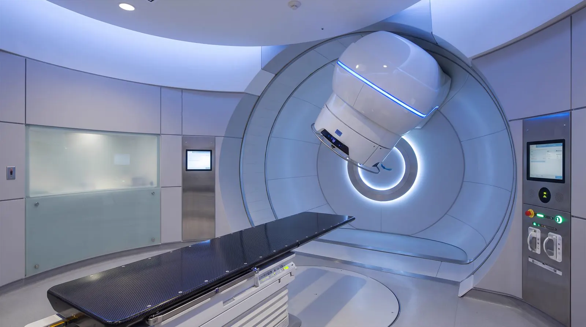
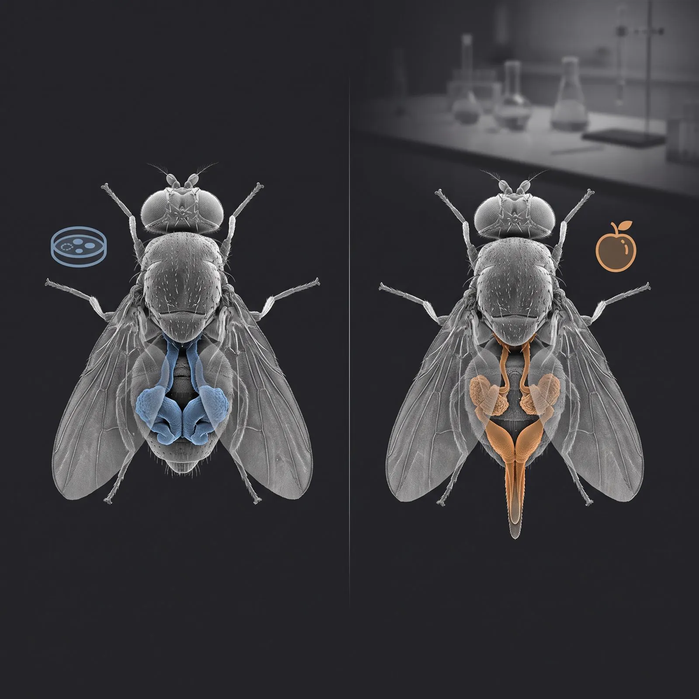
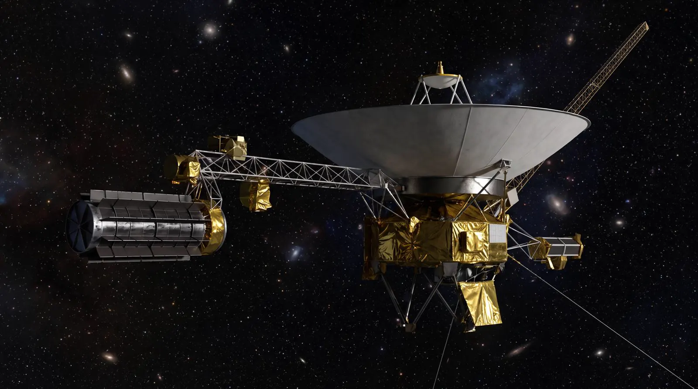

Energía eléctrica: la aplicación principal
La aplicación más conocida de la energía nuclear es la generación de electricidad. En una central, la fisión del uranio produce calor que transforma agua en vapor, y ese vapor hace girar una turbina conectada a un generador — el mismo principio que una central térmica convencional, pero sin quemar carbón, gas ni petróleo. Por eso se la considera una fuente de base: opera de forma continua, las 24 horas, todos los días del año.
Hoy más de 440 reactores operan en unos 30 países y generan alrededor del 10% de la electricidad mundial (en Francia, casi el 70%). Y a diferencia de los combustibles fósiles, durante su operación no emite dióxido de carbono: es una de las fuentes de electricidad con menor huella de carbono que existen.
Argentina genera alrededor del 7% de su electricidad con energía nuclear mediante las centrales Atucha I, Atucha II (Zárate, Buenos Aires) y Embalse (Córdoba). El CAREM, primer reactor de potencia diseñado íntegramente en el país, y el futuro reactor multipropósito RA-10 marcan los próximos pasos de esta matriz. Para entender cómo funciona un reactor por dentro, visitá la página de Reactores Nucleares.
Un gramo de uranio-235 libera al fissionarse la misma energía que 2.700 litros de petróleo o 3.000 kg de carbón. Por eso una sola pastilla de combustible nuclear —del tamaño de una goma de borrar— alcanza para abastecer de electricidad a una familia durante muchos meses.
¿Qué es la medicina nuclear?
La medicina nuclear utiliza pequeñas cantidades de materiales radiactivos —llamados radiofármacos— para diagnosticar y tratar enfermedades. A diferencia de la radiología convencional (rayos X), donde la radiación proviene de una fuente externa y atraviesa al paciente, en medicina nuclear la radiación se origina dentro del cuerpo: el radiofármaco se acumula en el órgano o tejido que se quiere estudiar y emite radiación que se detecta desde afuera.
Los radioisótopos más usados emiten radiación gamma, que es penetrante y detectable con cámaras especiales como las SPECT y las PET. Esto permite crear imágenes que muestran no solo la anatomía sino el funcionamiento metabólico de los órganos.
Argentina tiene una larga tradición en medicina nuclear. La CNEA, a través del reactor RA-3 en el Centro Atómico Ezeiza, produce Mo-99, que decae a Tc-99m, el radioisótopo más utilizado en diagnóstico por imágenes a nivel mundial. Argentina abastece al mercado local e incluso exporta a la región.
La medicina nuclear es solo una parte de la historia. Rayos X, tomografías, radioterapia, protones, braquiterapia y la terapia argentina BNCT tienen su página completa con todas las técnicas que salvan vidas en los hospitales.
Más del 80% de los procedimientos de medicina nuclear en el mundo usan Tc-99m, un isótopo que se obtiene del decaimiento del Mo-99. Y el Mo-99 se produce en reactores de investigación — una tecnología que Argentina domina completamente. Sin reactores nucleares, la medicina nuclear moderna no existiría.
Diagnóstico por imágenes (PET y SPECT)
La SPECT (tomografía computarizada por emisión de fotón único) usa radiofármacos que emiten un solo fotón gamma, como el Tc-99m. Una cámara gamma gira alrededor del paciente y reconstruye una imagen tridimensional que muestra cómo se distribuye el radiofármaco. Se usa para estudiar el corazón (perfusión miocárdica), los huesos (metástasis) y el cerebro.
La PET (tomografía por emisión de positrones) es más avanzada. Usa radiofármacos que emiten positrones (e⁺), como la F-18 FDG (fluorodesoxiglucosa). El F-18 decae emitiendo un positrón que, al encontrarse con un electrón del tejido, se aniquila produciendo dos fotones gamma de 511 keV que salen en direcciones opuestas. Detectores opuestos registran la coincidencia y permiten localizar el punto exacto de la aniquilación.
La gran ventaja de SPECT y PET es que muestran función, no solo anatomía. Un tumor consume más glucosa que el tejido sano, por lo que acumula más FDG y "brilla" en la imagen PET. Esto permite detectar cáncer en etapas muy tempranas, evaluar respuesta a tratamientos y estudiar enfermedades neurológicas como el Alzheimer.
Argentina produce Tc-99m a partir de Mo-99 generado en el reactor RA-3 del Centro Atómico Ezeiza. El Mo-99 tiene una vida media de 66 horas, por lo que la producción debe ser continua — y la logística, impecable. La CNEA abastece a más de 400 centros de medicina nuclear en todo el país.
Terapia con radiación
La radioterapia es una de las tres grandes armas contra el cáncer, junto con la cirugía y la quimioterapia. Consiste en dirigir radiación ionizante hacia el tumor para destruir las células cancerosas o impedir que se dividan. Existen dos variantes principales: teleterapia (fuente externa) y braquiterapia (fuente interna). Y dentro de la teleterapia, existen a su vez tres técnicas muy distintas que se diferencian por cómo depositan la dosis en el tejido.
En teleterapia con fotones (rayos X de acelerador lineal, o gamma del Cobalto-60), la radiación deposita su máxima dosis cerca de la superficie y se va atenuando a medida que penetra. Para llegar al tumor en profundidad, los tejidos sanos anteriores reciben una dosis igual o mayor que el propio tumor. Y lo que sale del otro lado también recibe dosis innecesaria. La curva azul muestra por qué los protones son diferentes: depositan poca energía al entrar, y la liberan casi toda en una profundidad muy precisa — el pico de Bragg. Más allá, la dosis cae prácticamente a cero. Es como un bisturí invisible: corta el tumor y respeta el tejido sano que tiene detrás.

En terapia metabólica, el radiofármaco se administra al paciente y se acumula naturalmente en el tejido enfermo. El ejemplo clásico es el Iodo-131 (¹³¹I) para tratar el cáncer de tiroides: la glándula tiroides absorbe yodo de forma natural, así que al administrar ¹³¹I, la radiación se concentra exactamente donde se necesita. También se usa Lu-177 para tumores neuroendocrinos y Sm-153 para metástasis óseas.
La braquiterapia coloca pequeñas semillas o fuentes radiactivas (I-125, Ir-192) directamente dentro del tumor o muy cerca de él. Esto permite entregar dosis altas al tumor con mínimo daño a los tejidos sanos circundantes. Se usa principalmente en cáncer de próstata, cuello uterino y mama.
El Cobalto-60 que se usa en Argentina para radioterapia y esterilización se produce en la central nuclear Embalse (Córdoba). La CNEA fabrica las fuentes selladas y las distribuye a hospitales de Argentina y de toda América Latina. Es uno de los pocos países del mundo con capacidad de producir Co-60 de uso médico. Para braquiterapia de próstata, en el país se usan semillas de I-125 producidas en el reactor RA-3 del Centro Atómico Ezeiza.
Industria, agricultura y medioambiente
La tecnología nuclear tiene aplicaciones industriales masivas que pasan desapercibidas. La gammagrafía industrial funciona como una radiografía de soldaduras, cañerías y estructuras metálicas: una fuente de Ir-192 o Co-60 se coloca de un lado de la pieza y del otro lado se coloca una placa radiográfica. Cualquier grieta, porosidad o defecto aparece como una sombra. Esta técnica es clave en la construcción de reactores nucleares, puentes, gasoductos y aeronaves.
Los trazadores radiactivos permiten seguir el recorrido de fluidos en cañerías industriales, detectar fugas en represas, medir el desgaste de motores y mezclar eficientemente productos en la industria petroquímica. Se inyecta una cantidad ínfima de un radioisótopo de vida corta y se sigue su trayecto con detectores externos — sin detener la producción.
La irradiación de alimentos expone frutas, carnes, especias y granos a radiación gamma (Co-60) o a haces de electrones para eliminar bacterias, parásitos e insectos, extendiendo su vida útil sin usar productos químicos ni alterar el valor nutricional. Es un proceso frío — no eleva la temperatura del alimento. Argentina irradia especias, frutas secas y productos para pacientes inmunodeprimidos.
La Técnica del Insecto Estéril (TIE) es una de las aplicaciones más ingeniosas: se crían millones de machos de una plaga (como la mosca de la fruta), se esterilizan con radiación gamma de Co-60 y se liberan en la zona afectada. Los machos estériles compiten con los salvajes por las hembras, pero los apareamientos no producen descendencia. La población colapsa en pocas generaciones. Argentina emplea la TIE en Mendoza para proteger sus viñedos y frutales, reduciendo drásticamente el uso de insecticidas.

El Co-60 producido en Embalse también se usa para esterilizar equipamiento médico: jeringas, guantes, suturas, implantes, prótesis. La radiación atraviesa el envase sellado y esteriliza sin calor, lo que permite procesar materiales termosensibles. Un solo lote de Co-60 puede esterilizar millones de unidades.
Datación, arte y exploración espacial
La datación por Carbono-14 (¹⁴C) es una de las herramientas más poderosas de la arqueología y la paleontología. El ¹⁴C se forma en la atmósfera por la interacción de rayos cósmicos con el nitrógeno. Los seres vivos lo incorporan mientras están vivos; al morir, dejan de absorberlo y el ¹⁴C decae con una vida media de 5.730 años. Midiendo cuánto ¹⁴C queda en un resto orgánico, se puede determinar su antigüedad hasta unos 50.000 años atrás. Con esta técnica se dataron los Rollos del Mar Muerto, Ötzi (el hombre de hielo) y las pinturas rupestres de la Cueva de las Manos.
La termoluminiscencia permite datar cerámicas y material mineral calentado (hogueras antiguas, ladrillos). Cuando un material cristalino se calienta, libera la energía acumulada por la radiación ambiental en forma de luz. Midiendo esa luz, se estima cuánto tiempo pasó desde la última cocción. Complementa al C-14 donde no hay material orgánico.
El análisis por activación neutrónica (NAA) bombardea una muestra con neutrones en un reactor. Los átomos de la muestra se activan y emiten rayos gamma característicos que revelan exactamente qué elementos químicos contiene y en qué proporción, sin destruir la muestra. Es ideal para autenticar obras de arte, identificar la procedencia de cerámicas arqueológicas y detectar fraudes (por ejemplo, pigmentos modernos en una supuesta pintura renacentista).
En el espacio profundo, donde la luz solar es demasiado débil para alimentar paneles, la energía nuclear es la única opción viable. Los RTG (Generadores Termoeléctricos de Radioisótopos) convierten el calor del decaimiento de Pu-238 (plutonio-238, vida media 87.7 años) en electricidad mediante termopares. No tienen partes móviles: son robustos, confiables y duran décadas.

Los RTG han alimentado algunas de las misiones más extraordinarias de la exploración espacial: las sondas Voyager 1 y 2 (lanzadas en 1977, aún transmitiendo desde el espacio interestelar), las misiones a Marte Curiosity y Perseverance, la sonda New Horizons que sobrevoló Plutón, y la misión Cassini a Saturno. Sin la energía nuclear, ninguna de estas proezas habría sido posible.
La Voyager 1, lanzada en 1977, se encuentra actualmente a más de 24.000 millones de kilómetros de la Tierra. Su RTG de Pu-238 le proporcionó ~470 W al lanzamiento y hoy aún genera ~250 W — suficiente para que siga enviando datos desde el espacio interestelar casi 50 años después. Ninguna batería química o panel solar podría igualar esa longevidad.
Propulsión naval nuclear
Los submarinos y portaaviones nucleares usan un reactor compacto que genera el vapor que mueve sus turbinas y hélices. La gran ventaja es que la fisión no consume aire: a diferencia de un motor diésel, el reactor no necesita oxígeno, por lo que un submarino nuclear puede permanecer sumergido durante meses, sin salir a la superficie. Una sola recarga de uranio le da décadas de autonomía.
El USS Nautilus (1954) fue el primer submarino nuclear de la historia. Desde entonces, las potencias navales —Estados Unidos, Rusia, Francia, Reino Unido, China e India— construyen submarinos y portaaviones atómicos, como la clase Nimitz y el Gerald R. Ford, cada uno con dos reactores que lo impulsan a más de 30 nudos sin repostar en ~25 años.
La energía nuclear también impulsa rompehielos (Rusia opera la mayor flota atómica del mundo en el Ártico) y es el candidato más fuerte para la propulsión espacial de largo alcance: los motores nucleares-térmicos podrían reducir a la mitad el tiempo de viaje a Marte, un campo donde la NASA y la agencia china ya investigan.
En 1958, el submarino nuclear USS Nautilus completó el primer cruce del Ártico bajo la capa de hielo, viajando de Alaska a Groenlandia sin emerger ni una sola vez. Era algo imposible para cualquier submarino diésel-eléctrico, que solo puede estar sumergido unos días antes de agotar su batería.
Si te interesa la propulsión nuclear en el espacio —motores nucleares-térmicos para viajar a Marte—, en la Revista hay un artículo completo: Propulsión nuclear espacial.
Agua dulce, hidrógeno y calor de distrito
Una central nuclear es, ante todo, una máquina que produce calor. Ese calor puede usarse no solo para electricidad, sino también para desalinizar agua de mar, fabricar hidrógeno y calefaccionar ciudades. Aprovechando el calor "de sobra", la energía nuclear multiplica su utilidad.
Desalinización
El vapor o calor residual alimenta plantas de destilación que convierten agua de mar en agua potable. El reactor soviético de Aktau (Kazajistán) desalinizó agua del Caspio durante 27 años; Japón y Medio Oriente estudian hoy centrales de doble propósito: electricidad + agua.
Hidrógeno "rosa"
La electricidad nuclear puede romper la molécula de agua (electrólisis) para producir hidrógeno sin emisiones, que reemplace el gas natural en la fabricación de acero, fertilizantes y combustibles para barcos. Es la vía más realista para descarbonizar la industria pesada.
Calefacción de distrito
Vapor de baja temperatura puede circular por tuberías para calefaccionar barrios enteros. En China, la central de Haiyang calienta a más de un millón de personas; en el Ártico ruso, las plantas atómicas calientan ciudades completas todo el año.
Estas aplicaciones térmicas son especialmente interesantes para los reactores modulares pequeños (SMR) como el CAREM: al ser compactos y seguros, pueden instalarse cerca de industrias y ciudades para dar calor y agua, no solo kilovatios.
Argentina ya investiga el potencial del hidrógeno a partir de energía nuclear y de sus reactores para usos no eléctricos. La Patagonia, con vientos y sol, y la energía nuclear de base podrían combinar la producción de hidrógeno "verde" y "rosa" — el país tiene una de las matrices de energía nuclear de baja emisión más consolidadas de la región.
Monitoreo ambiental y seguridad
La tecnología nuclear es también una herramienta silenciosa de vigilancia. Los trazadores radiactivos permiten seguir corrientes oceánicas, medir la contaminación de ríos y lagos, estudiar acuíferos subterráneos y verificar el origen de los alimentos. Son cantidades ínfimas de isótopos, inofensivas, que "cuentan" el camino del agua y el suelo.
En seguridad y vigilancia, los detectores de radiación protegen las fronteras: puertos, aeropuertos y pasos internacionales controlan contenedores y equipajes para impedir el tráfico ilegal de materiales radiactivos. La red CTBTO —con estaciones en Argentina— monitorea la atmósfera en busca de isótopos de xenón que delatarían una prueba nuclear clandestina, garantizando el cumplimiento de los tratados de no proliferación.
A nivel individual, los dosímetros miden la exposición acumulada de los trabajadores de centrales, hospitales e industrias, y los límites de dosis los fija la Autoridad Regulatoria Nuclear (ARN) argentina, que verifica la seguridad de todas las instalaciones del país. Así, la misma tecnología que diagnostica y cura también nos cuida a todos.
BNCT: la terapia argentina
La Terapia por Captura Neutrónica de Boro (BNCT) es una técnica de precisión para destruir tumores, y Argentina es pionera mundial en su desarrollo clínico. A diferencia de la radioterapia convencional, la BNCT destruye las células tumorales desde adentro, sin dañar el tejido sano circundante.
El proceso ocurre en dos pasos. Primero, se administra al paciente un compuesto que contiene boro-10 (¹⁰B), un isótopo estable que se acumula selectivamente dentro de las células tumorales. Luego, se irradia la zona con un haz de neutrones de baja energía. Cuando un neutrón es capturado por un núcleo de ¹⁰B, se produce una reacción nuclear que libera una partícula alfa (⁴He) y un núcleo de litio-7, partículas que destruyen la célula tumoral desde su interior. Como estas partículas solo viajan 5–9 micrómetros —el diámetro de una célula—, el daño queda confinado exclusivamente a las células que absorbieron el boro.
La historia argentina comenzó en el Centro Atómico Bariloche, donde el reactor de investigación RA-6 fue adaptado en los años 90 para producir haces de neutrones aptos para ensayos clínicos de BNCT. Argentina fue uno de los primeros países del mundo en tratar pacientes reales con melanoma —un cáncer de piel agresivo para el que no hay buenas alternativas— y con glioblastoma multiforme, el tumor cerebral más letal. Los resultados fueron alentadores y pusieron a la ciencia argentina en el mapa mundial de la BNCT.
El desafío actual es reemplazar el reactor nuclear por un acelerador compacto que pueda instalarse directamente en un hospital, haciendo la técnica accesible a miles de pacientes. El Dr. Andrés Kreiner (CNEA-CONICET), junto con equipos de la UNSAM, lidera el desarrollo de un acelerador electrostático diseñado específicamente para BNCT. Si este proyecto prospera, Argentina no solo habrá sido pionera en la aplicación clínica de la BNCT, sino también en la tecnología para masificarla.
En el mundo hay muy pocos países con programas de BNCT: Japón, Finlandia, Estados Unidos, Italia y Argentina. El reactor RA-6 del Centro Atómico Bariloche fue uno de los primeros reactores del mundo acondicionados para ensayos clínicos de esta terapia. Actualmente, el foco está puesto en desarrollar un acelerador específico que reemplace al reactor, un proyecto que la CNEA desarrolla con investigadores del CONICET y la UNSAM.
Conceptos Clave
- ✦ La aplicación principal es la generación de electricidad (~10% del mundo, sin CO₂). Argentina genera ~7% con Atucha I/II, Embalse y proyecta el CAREM.
- ✦ La medicina nuclear diagnostica con SPECT/PET y trata con I-131 y Co-60. Argentina produce Mo-99/Tc-99m en el RA-3.
- ✦ La gammagrafía industrial inspecciona soldaduras sin destruirlas — clave en construcción de reactores.
- ✦ La técnica del insecto estéril (TIE) usa Co-60 para controlar plagas sin pesticidas — Argentina la aplica en Mendoza.
- ✦ El C-14 permite datar restos orgánicos de hasta 50.000 años por desintegración radiactiva.
- ✦ Los RTG de Pu-238 alimentan sondas espaciales — Voyager, Perseverance y Curiosity dependen de la energía nuclear.
- ✦ Los submarinos y portaaviones nucleares operan meses sin emerger: la fisión no consume oxígeno.
- ✦ El calor nuclear también desaliniza agua, produce hidrógeno y calefacciona ciudades.
- ✦ Los detectores de radiación vigilan puertos y fronteras, y los dosímetros protegen a los trabajadores.
- ✦ La BNCT (Terapia por Captura Neutrónica de Boro) destruye tumores célula por célula. Argentina es pionera mundial: el reactor RA-6 en Bariloche fue de los primeros en tratar pacientes con melanoma y glioblastoma.
Temas Relacionados
Todas las técnicas nucleares que diagnostican y curan: radiología, gammagrafía, PET, radioterapia, BNCT
RadioisótoposLos átomos inestables que hacen posible el diagnóstico y la terapia
RadiacionesAlfa, beta, gamma: los tipos de emisión radiactiva
Reactores NuclearesDónde se produce la electricidad y los radioisótopos
Revista · PropulsiónArtículo completo sobre motores nucleares para viajar a Marte
Rayos CósmicosLos telescopios espaciales, los detectores de ondas gravitacionales y los radiotelescopios que exploran el cosmos
La Nuclear en el MundoFlota global de reactores, SMR, Generación IV y el rol de la nuclear en la transición energética
Energía y Propulsión Espacial →Página nueva (tema 19): cohetes SpaceX, satélites, RTGs de Pu-238 y el futuro de la propulsión nuclear